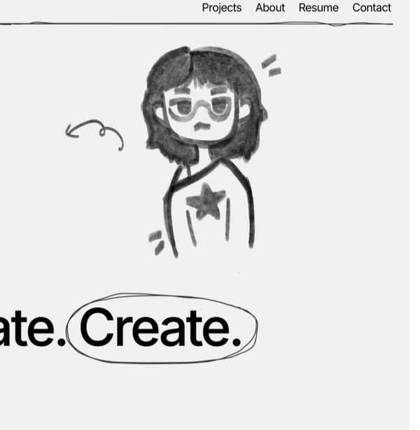
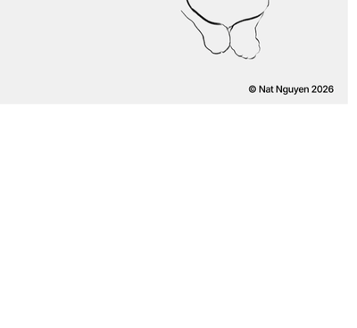

Marketing Designer
King's Pastry · Sept–Dec 2025
Wireframes, landing pages, AI-assisted front-end, Google Analytics, competitive analysis, print & digital marketing assets.
7 projects
I'm Nat, a product designer from Canada.
When I'm not designing, you'll find me hunting for the best matcha in town, watching movies, or drawing things that probably won't see the light of day.

University of Waterloo · 2023–2027
I get frustrated by bad UX, cluttered interfaces, and design that doesn't consider real people. I don't get frustrated by iteration, feedback, or starting over when something isn't working.
I'm a product designer who cares about solving problems and expressing myself through the work — whether that's a mobile app, a rhythm game, or a bakery poster.

Wireframes, landing pages, AI-assisted front-end, Google Analytics, competitive analysis, print & digital marketing assets.
End-to-end mobile budgeting app in a 12-hour sprint. Personas, journey maps, Figma wireframes. Placed 3rd of 100.
BA Global Business & Digital Arts
University of Waterloo · 2023–2027